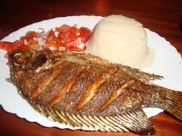

Kenyan Fried Tilapia
A crispy whole tilapia simmered in a rich tomato, onion, garlic and dhania sauce. It's especially good with ugali and sukuma wiki.
Ingredients
Instructions
- Heat oil in a pan over medium heat.
- Add the whole tilapia and cook for 5–7 minutes on each side, or until golden brown.
- Add chopped onions, tomatoes and garlic.
- Add dhania and simmer until the sauce thickens.
- Serve hot with ugali and sukuma wiki.
Cooking Timer
Set a timer while preparing your tilapia.
05:00